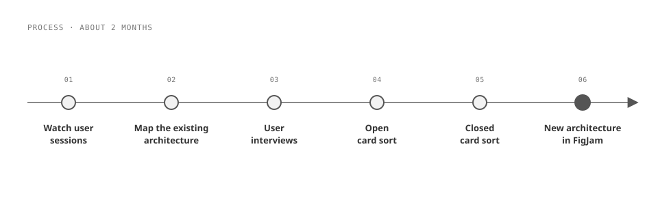
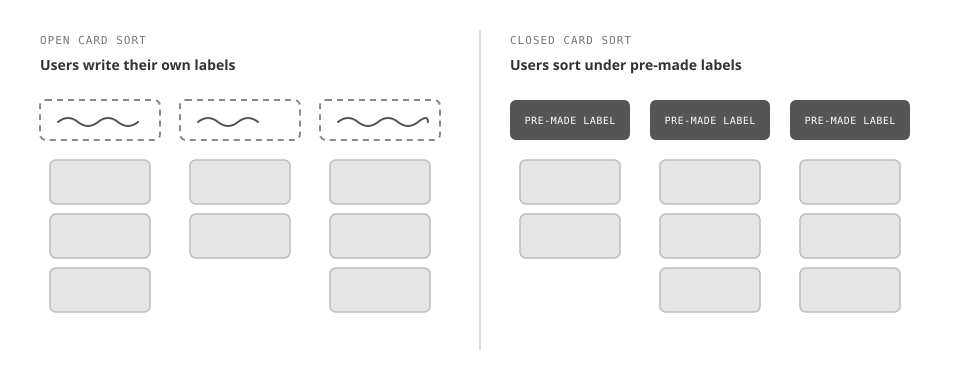
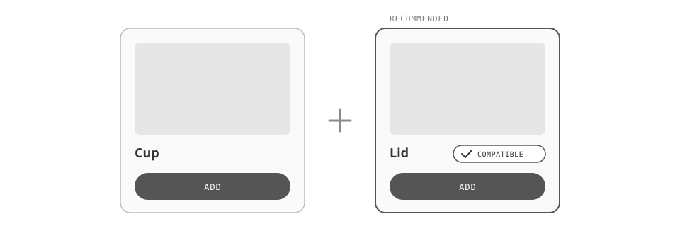
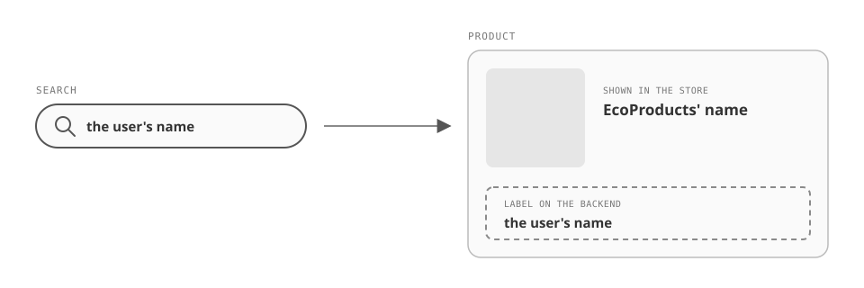

After a product expansion forced EcoProducts to reorganize its online store, conversions dropped 10%, and the company came to Slide UX to get back to its baseline. As Senior UX Designer, I owned the information architecture and conversion flow: I watched user sessions, interviewed users, and ran open and closed card sorts to find the gap between where shoppers expected products to be and where they actually lived, then rebuilt the structure around what they told us. Three months after launch, conversions were up 12%, past the baseline EcoProducts had asked us to get back to.

EcoProducts makes compostable, eco-friendly food service products: containers, plates, boxes, utensils, napkins, and to-go materials, with a different product for nearly every use. It's a big company, and it partners with large arenas and conference spaces across the US.
The trouble started with growth. EcoProducts expanded its product line, and the new products didn't fit the store's existing structure, so the company reorganized its information architecture to make room for them. After that change went live, conversions dropped 10%.
EcoProducts came to Slide UX with that problem and one clear goal: get conversions back to where they were before the reorganization.
The project ran about 2 months. I worked with one other designer and a product manager. I owned the information architecture and the conversion flow; the other designer focused on specific product pages, improving how shoppers moved to related products and how they started checkout.
The first move was watching. I went through a lot of user sessions in EcoProducts' analytics tool to see where people got stuck. Then I mapped the existing architecture end to end, including every product and where it sat, so we could see the whole store at once instead of one menu at a time.
Next came the users themselves. I ran user interviews and card sorting sessions to learn how people would actually organize the products and where they expected to find specific items. I ran the card sorts in two rounds. In the open sort, users grouped the products and wrote their own labels for each group. In the closed sort, they sorted the same products under pre-made labels we had written from our own assumptions, which showed us where those assumptions held and where they didn't.
Two findings shaped everything after. Users had their own way of referring to the new line of products, different from what the store called them. And there was a gap between where users expected to find products and where those products actually lived on the site.
With the card sort results in hand, I mapped the new architecture in FigJam: new top-level categories, products regrouped, and category names drawn from how users described things.

Let the card sorts, not our assumptions, set the new structure
Rebuilt the categories and their names from what users did in the open and closed card sorts, instead of from the labels we had assumed would work.
The closed sort was a direct test of those assumptions, and it showed a gap between where users expected products and where they actually were. The structure that had cost EcoProducts 10% of its conversions had been organized around how the company thought about its products; the new one is organized around how its customers look for them.

Show shoppers that recommended products fit, so they don't leave to check
Grouped related products the way users actually shopped and built logic to show that the recommended items were compatible, rather than leaving shoppers to find and verify matching pieces on their own.
This was the biggest change to the product pages. A common pattern: a shopper adds cups or soup containers, then has to separately find lids and make sure the sizes and quantities line up. People were dropping off after spending time trying to confirm the lids fit what they were buying. Now the recommended products show they're compatible, so shoppers can add them right there without going anywhere else on the site.

Keep users' product names in search when renaming was off the table
The card sorts showed that users called some products by different names than EcoProducts did, so we proposed new names for them. But changing product names outright was out of scope for this eCommerce project.
Instead of dropping what we'd learned, we added the users' names to the products as labels on the backend. The store still shows EcoProducts' names, but a shopper who searches for a product by the name they'd use still finds it easily.

"EcoProducts had come to us to recover a 10% drop and get back to baseline; the redesign went past it."
The new architecture and the product-page changes launched together, and three months after launch, conversions were up 12%. EcoProducts had come to us to recover a 10% drop and get back to baseline; the redesign went past it.
Talking to users and testing with them early turned up a lot of easy wins, problems that were quietly costing EcoProducts sales. None of the fixes were dramatic: a structure that matched how people looked, lids that clearly fit, a search that knew what customers called things. It was cool to see a few small changes have a big impact on the company.